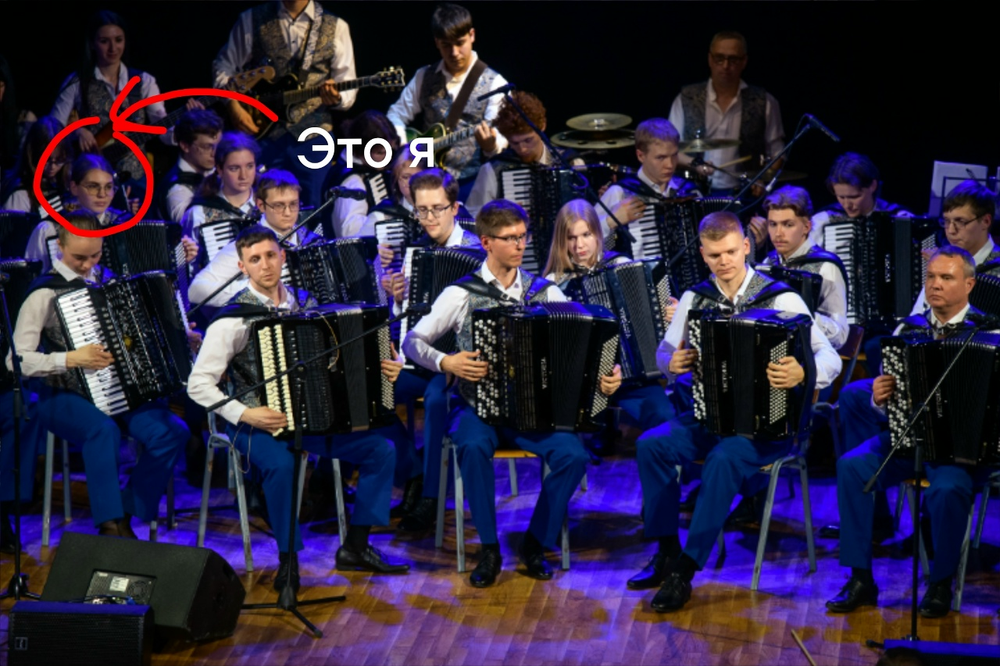
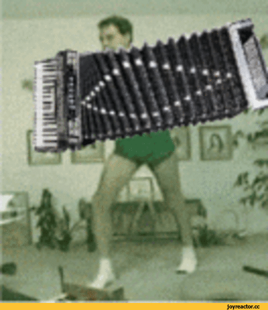

Курсовая
Делаю игру крестики нолики, это очень важно для того чтобы не отлететь на допсу
Студентка первого курса Политеха, учусь, играю на аккордеоне и в волейбол

P.S. мы тут играем что-то грустное 🎵
Играю в оркестре Павла Ивановича Смирнова на партии вторые аккордеоны. Любительски занимаюсь волейболом, раньше занималась пятиборьем. У меня есть сестра близнец, которая совершенно на меня не похожа.
Делаю игру крестики нолики, это очень важно для того чтобы не отлететь на допсу
20 мая был отчетный концерт, я к нему долго готовилась, учила партию. В итоге все прошло хорошо.

Вот как выглядит моя зарядка